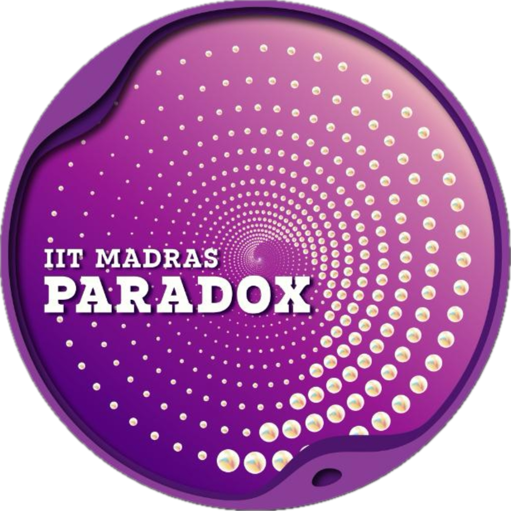

Experimental design
Form hypotheses, design experiments, and test real ideas. You'll document your methodology the way researchers do.

A full-cycle research simulation where participants ideate, experiment, document, review, refine, and present their work in a competitive academic environment. This is not just another competition—it's your entry into a real research ecosystem.
Research: To Infinity and Beyond simulates the real research ecosystem—where ideas are tested, refined through peer review, and presented to expert evaluators. You're not solving a problem from a textbook. You're thinking like researchers do: hypothesize, design, experiment, analyze, refine, and present.
Form hypotheses, design experiments, and test real ideas. You'll document your methodology the way researchers do.
Submit your work for anonymous peer evaluation. Learn how the academic publishing process actually works.
Present before expert researchers and industry professionals. This is where ideas are judged on merit and clarity.
Start with a question, not a solution. Learn critical thinking by building and testing your ideas.
For intermediate participants: produce work that meets academic standards. This is serious research.
Work with ambitious peers. Present to mentors and experts. Learn from feedback at every stage.
Choose the track that matches your experience level. Both are serious research challenges. The difference is the depth and scope.
Your entry into hands-on research. You'll receive a hypothesis, design an experiment, document your methodology, and present your findings to an expert jury—just like in real research.
The serious research path. Produce a full, peer-reviewed research journal in AI, Data Science, or Electronics & Embedded Systems. Submit for anonymous peer review, incorporate feedback, and present to expert researchers and industry professionals.
For intermediate track participants, here's the complete timeline. All dates are tentative.
Briefing on event structure, topic domains, and journal format expectations.
Final author list locked. Order matters, just like in real research.
Submit your manuscript draft for anonymized peer review. Must be substantially complete.
Each paper receives at least two anonymous reviews. All teams review others' work.
Incorporate or consciously reject feedback. Shortlisted papers proceed to presentations.
Qualified teams present to the jury at IIT Madras campus. Open cohort format for others.
Use this guide to understand which path matches your goals and experience level.
This isn't about "gaining exposure" or "enhancing skills"—vague promises. Here's what actually happens when you participate:
This isn't a simulation—it's how real research works. You think like researchers, go through the same workflows, and present to experts who actually judge research for a living.
Hypothesis → Design → Experiment → Present. In compressed time, you learn what accelerates intellectual thinking. You'll know what it feels like to defend an idea.
Not generic comments—substantive evaluation from researchers and industry professionals. This teaches you what "good" really means at an academic level.
You'll collaborate with students who chose this event specifically. That changes the energy. You'll be surrounded by people who take intellectual work seriously.
Do you think in hypotheses? Can you design clean experiments? Can you communicate findings clearly? This event answers those questions about yourself.
Whether you pursue research later or not, you'll have experienced the core of how knowledge gets created and validated. That mindset matters forever.
Research: To Infinity and Beyond is your chance to think like a researcher, collaborate with ambitious peers, and present your ideas to experts who take intellectual work seriously.
Spots are limited. The event happens in May and June 2026.
Whether you need help choosing a track, understanding the submission process, forming a team, or clarifying any aspect of the event—reach out. The coordinators are here to guide you.
Deputy Event Head